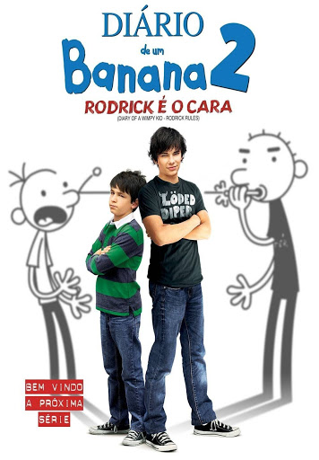

Diário de um banana: rodrick é o cara

ano de produção: 2011
direção: David Bowers
duração : 1h34min
Classificação:livre para todos os publicos
pais de origem: EUA
sinopse
Greg inicia o ano letivo com a mesma confiança, as mesmas amizades e de olho em Holly Hills, a rapariga que acaba de chegar à cidade. No entanto, em casa, Greg continua a entrar em conflito com o irmão Rodrick, o que faz com que os pais de ambos lhes de ambos os castiguem da pior forma possível: obrigando os dois a passar mais tempo juntos
clique aqui para saber mais